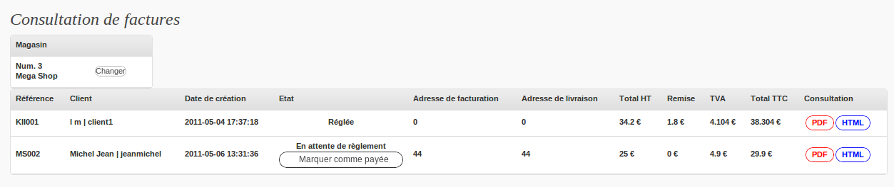
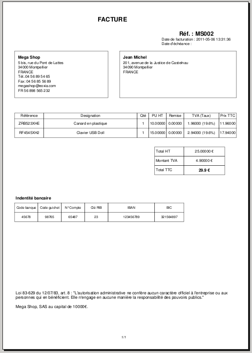

EOinvoice
Mode d’emploi
Il existe 3 rôles au sein d'EOinvoice:
- Client
- Gestionnaire
- Administrateur
Pour chaque rôle, les fonctionnalités offertes diffèrent et le menu également:
Le Client est l'utilisateur de base, dont voici le menu:
Il peut:
- Consulter ses factures
- Modifier ses coordonnées
- Créer un magasin, et par conséquent devenir Gestionnaire
Le Gestionnaire gère un ou plusieurs magasins, il est aussi Client
Voici son menu:
Il peut donc:
- Consulter ses factures et celles de son magasin, et marquer une facture comme étant payée

- Consulter une page récapitulative des derniers chiffres
- Créer des factures
- Modifier ses coordonnées
- Modifier les coordonnées du magasin et designer d'autres Gestionnaires à son magasin
L'Administrateur peut gérer tous les magasins, il peut donc:
- Consulter des factures
- Créer des factures
- Modifier les coordonnées d'un magasin et gérer ses Gestionnaires
- Créer des magasins en désignant un Gestionnaire principal
Si le Gestionnaire gère plusieurs magasin, il doit passer par l'interface de sélection (automatique):
Les factures sont consultables au format PDF, en voici un exemple:

On peut également consulter directement dans le navigateur au format HTML (cependant cette méthode n'est pas prévus pour l'impression)